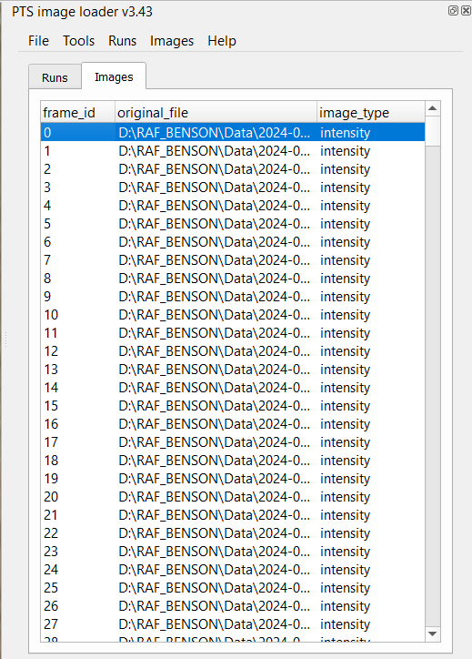
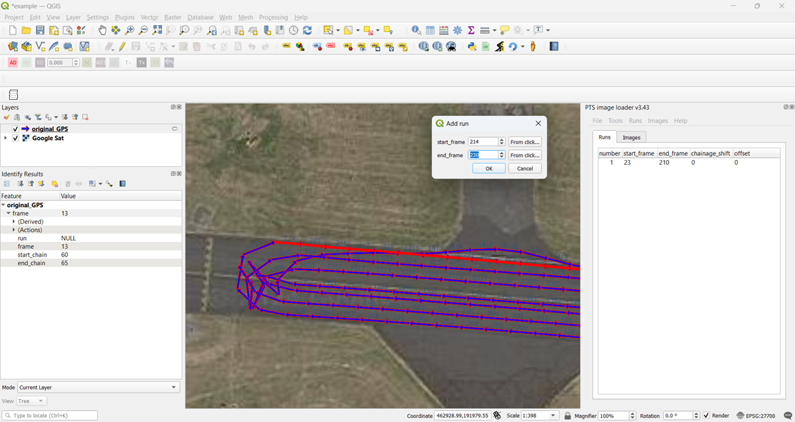
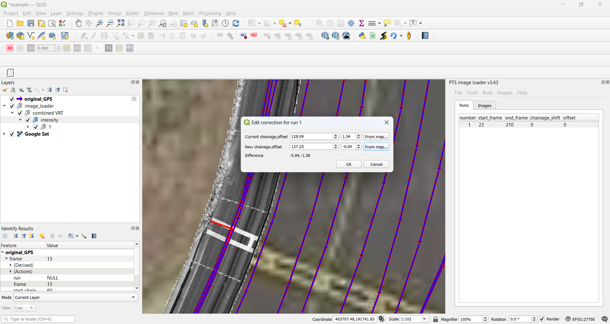

Plugin for cataloging,georeferencing and loading images from MFV into QGIS. To use:
Tell the plugin where the images to process are stored by adding them to the images table.
"Images","Find images from folder..." will add a row for every .jpg file in folder and subfolders.
The plugin can also find image details from a "raster image load" file produced by the distress plotter macro. This is through "File","Open","Open raster image load file..." If doing this project_folder("Tools","Settings")/data is searched for original jpg filenames.
Choose a projection for spatial calculations through "Tools , settings...". EPSG:27700 for surveys in Britain.
Load GPS through "File, Open, Open gps...".
GPS data is usually in a file like "project_folder\Hawkeye Exported Data\MFV1_001-rutacd-1.csv".
Use "Tools" , "View", "View GPS data" to view this as a QGIS layer named "original_GPS"
Runs mark which images should be georeferenced.
There should be 1 run per time the vehicle surveyed an area of interest in a direction.
Where the vehicle changed direction should be a seperate run.
Create runs through the "runs from polygons layer" dialog.
Or by right clicking the runs table then "Add new run...".
"virtual raster text" files are small text files containing links to the georeferenced images. Viewing a VRT file is much faster and less likely to crash QGIS than viewing its images as seperate layers.
A positive chainage correction moves images forward. A positive offset correction moves images to the left side of the vehicle path. Right clicking the runs table then "Edit correction..." will display a dialog for finding corrections.
Distress data like cracking,rutting and joint faulting is contained in a folder like 'D:\RAF_BENSON\Data\2024-01-08\MFV1_001\Run 1\LCMS Module 1\Results'
The plugin can load this from .acdx files or xml files. Acdx files are zipped xml files produced by hawkeye.
"Tools","View",... will apply corrections and make a tempuary layer in QGIS.